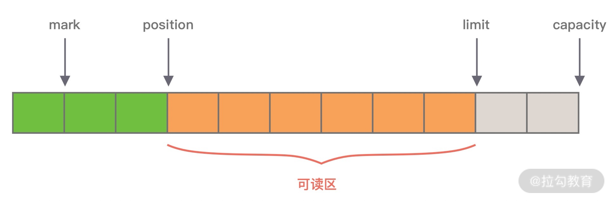
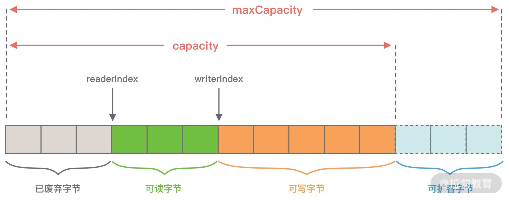
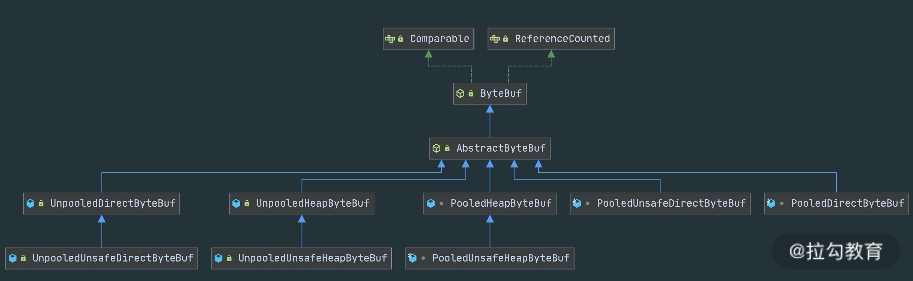

- 00 学好 Netty，是你修炼 Java 内功的必经之路.md.html
- 01 初识 Netty：为什么 Netty 这么流行？.md.html
- 02 纵览全局：把握 Netty 整体架构脉络.md.html
- 03 引导器作用：客户端和服务端启动都要做些什么？.md.html
- 04 事件调度层：为什么 EventLoop 是 Netty 的精髓？.md.html
- 05 服务编排层：Pipeline 如何协调各类 Handler ？.md.html
- 06 粘包拆包问题：如何获取一个完整的网络包？.md.html
- 07 接头暗语：如何利用 Netty 实现自定义协议通信？.md.html
- 08 开箱即用：Netty 支持哪些常用的解码器？.md.html
- 09 数据传输：writeAndFlush 处理流程剖析.md.html
- 10 双刃剑：合理管理 Netty 堆外内存.md.html
- 11 另起炉灶：Netty 数据传输载体 ByteBuf 详解.md.html
- 12 他山之石：高性能内存分配器 jemalloc 基本原理.md.html
- 13 举一反三：Netty 高性能内存管理设计（上）.md.html
- 14 举一反三：Netty 高性能内存管理设计（下）.md.html
- 15 轻量级对象回收站：Recycler 对象池技术解析.md.html
- 16 IO 加速：与众不同的 Netty 零拷贝技术.md.html
- 17 源码篇：从 Linux 出发深入剖析服务端启动流程.md.html
- 18 源码篇：解密 Netty Reactor 线程模型.md.html
- 19 源码篇：一个网络请求在 Netty 中的旅程.md.html
- 20 技巧篇：Netty 的 FastThreadLocal 究竟比 ThreadLocal 快在哪儿？.md.html
- 21 技巧篇：延迟任务处理神器之时间轮 HashedWheelTimer.md.html
- 22 技巧篇：高性能无锁队列 Mpsc Queue.md.html
- 23 架构设计：如何实现一个高性能分布式 RPC 框架.md.html
- 24 服务发布与订阅：搭建生产者和消费者的基础框架.md.html
- 25 远程通信：通信协议设计以及编解码的实现.md.html
- 26 服务治理：服务发现与负载均衡机制的实现.md.html
- 27 动态代理：为用户屏蔽 RPC 调用的底层细节.md.html
- 28 实战总结：RPC 实战总结与进阶延伸.md.html
- 29 编程思想：Netty 中应用了哪些设计模式？.md.html
- 30 实践总结：Netty 在项目开发中的一些最佳实践.md.html
- 31 结束语 技术成长之路：如何打造自己的技术体系.md.html
11 另起炉灶：Netty 数据传输载体 ByteBuf 详解
在学习编解码章节的过程中，我们看到 Netty 大量使用了自己实现的 ByteBuf 工具类，ByteBuf 是 Netty 的数据容器，所有网络通信中字节流的传输都是通过 ByteBuf 完成的。然而 JDK NIO 包中已经提供了类似的 ByteBuffer 类，为什么 Netty 还要去重复造轮子呢？本节课我会详细地讲解 ByteBuf。
为什么选择 ByteBuf
我们首先介绍下 JDK NIO 的 ByteBuffer，才能知道 ByteBuffer 有哪些缺陷和痛点。下图展示了 ByteBuffer 的内部结构：

从图中可知，ByteBuffer 包含以下四个基本属性：
- mark：为某个读取过的关键位置做标记，方便回退到该位置；
- position：当前读取的位置；
- limit：buffer 中有效的数据长度大小；
- capacity：初始化时的空间容量。
以上四个基本属性的关系是：mark <= position <= limit <= capacity。结合 ByteBuffer 的基本属性，不难理解它在使用上的一些缺陷。
第一，ByteBuffer 分配的长度是固定的，无法动态扩缩容，所以很难控制需要分配多大的容量。如果分配太大容量，容易造成内存浪费；如果分配太小，存放太大的数据会抛出 BufferOverflowException 异常。在使用 ByteBuffer 时，为了避免容量不足问题，你必须每次在存放数据的时候对容量大小做校验，如果超出 ByteBuffer 最大容量，那么需要重新开辟一个更大容量的 ByteBuffer，将已有的数据迁移过去。整个过程相对烦琐，对开发者而言是非常不友好的。
第二，ByteBuffer 只能通过 position 获取当前可操作的位置，因为读写共用的 position 指针，所以需要频繁调用 flip、rewind 方法切换读写状态，开发者必须很小心处理 ByteBuffer 的数据读写，稍不留意就会出错。
ByteBuffer 作为网络通信中高频使用的数据载体，显然不能够满足 Netty 的需求，Netty 重新实现了一个性能更高、易用性更强的 ByteBuf，相比于 ByteBuffer 它提供了很多非常酷的特性：
- 容量可以按需动态扩展，类似于 StringBuffer；
- 读写采用了不同的指针，读写模式可以随意切换，不需要调用 flip 方法；
- 通过内置的复合缓冲类型可以实现零拷贝；
- 支持引用计数；
- 支持缓存池。
这里我们只是对 ByteBuf 有一个简单的了解，接下来我们就一起看下 ByteBuf 是如何实现的吧。
ByteBuf 内部结构
同样我们看下 ByteBuf 的内部结构，与 ByteBuffer 做一个对比。

从图中可以看出，ByteBuf 包含三个指针：读指针 readerIndex、写指针 writeIndex、最大容量 maxCapacity，根据指针的位置又可以将 ByteBuf 内部结构可以分为四个部分：
第一部分是废弃字节，表示已经丢弃的无效字节数据。
第二部分是可读字节，表示 ByteBuf 中可以被读取的字节内容，可以通过 writeIndex - readerIndex 计算得出。从 ByteBuf 读取 N 个字节，readerIndex 就会自增 N，readerIndex 不会大于 writeIndex，当 readerIndex == writeIndex 时，表示 ByteBuf 已经不可读。
第三部分是可写字节，向 ByteBuf 中写入数据都会存储到可写字节区域。向 ByteBuf 写入 N 字节数据，writeIndex 就会自增 N，当 writeIndex 超过 capacity，表示 ByteBuf 容量不足，需要扩容。
第四部分是可扩容字节，表示 ByteBuf 最多还可以扩容多少字节，当 writeIndex 超过 capacity 时，会触发 ByteBuf 扩容，最多扩容到 maxCapacity 为止，超过 maxCapacity 再写入就会出错。
由此可见，Netty 重新设计的 ByteBuf 有效地区分了可读、可写以及可扩容数据，解决了 ByteBuffer 无法扩容以及读写模式切换烦琐的缺陷。接下来，我们一起学习下 ByteBuf 的核心 API，你可以把它当作 ByteBuffer 的替代品单独使用。
引用计数
ByteBuf 是基于引用计数设计的，它实现了 ReferenceCounted 接口，ByteBuf 的生命周期是由引用计数所管理。只要引用计数大于 0，表示 ByteBuf 还在被使用；当 ByteBuf 不再被其他对象所引用时，引用计数为 0，那么代表该对象可以被释放。
当新创建一个 ByteBuf 对象时，它的初始引用计数为 1，当 ByteBuf 调用 release() 后，引用计数减 1，所以不要误以为调用了 release() 就会保证 ByteBuf 对象一定会被回收。你可以结合以下的代码示例做验证：
ByteBuf buffer = ctx.alloc().directbuffer();
assert buffer.refCnt() == 1;
buffer.release();
assert buffer.refCnt() == 0;
引用计数对于 Netty 设计缓存池化有非常大的帮助，当引用计数为 0，该 ByteBuf 可以被放入到对象池中，避免每次使用 ByteBuf 都重复创建，对于实现高性能的内存管理有着很大的意义。
此外 Netty 可以利用引用计数的特点实现内存泄漏检测工具。JVM 并不知道 Netty 的引用计数是如何实现的，当 ByteBuf 对象不可达时，一样会被 GC 回收掉，但是如果此时 ByteBuf 的引用计数不为 0，那么该对象就不会释放或者被放入对象池，从而发生了内存泄漏。Netty 会对分配的 ByteBuf 进行抽样分析，检测 ByteBuf 是否已经不可达且引用计数大于 0，判定内存泄漏的位置并输出到日志中，你需要关注日志中 LEAK 关键字。
ByteBuf 分类
ByteBuf 有多种实现类，每种都有不同的特性，下图是 ByteBuf 的家族图谱，可以划分为三个不同的维度：Heap/Direct、Pooled/Unpooled和Unsafe/非 Unsafe，我逐一介绍这三个维度的不同特性。

Heap/Direct 就是堆内和堆外内存。Heap 指的是在 JVM 堆内分配，底层依赖的是字节数据；Direct 则是堆外内存，不受 JVM 限制，分配方式依赖 JDK 底层的 ByteBuffer。
Pooled/Unpooled 表示池化还是非池化内存。Pooled 是从预先分配好的内存中取出，使用完可以放回 ByteBuf 内存池，等待下一次分配。而 Unpooled 是直接调用系统 API 去申请内存，确保能够被 JVM GC 管理回收。
Unsafe/非 Unsafe 的区别在于操作方式是否安全。 Unsafe 表示每次调用 JDK 的 Unsafe 对象操作物理内存，依赖 offset + index 的方式操作数据。非 Unsafe 则不需要依赖 JDK 的 Unsafe 对象，直接通过数组下标的方式操作数据。
ByteBuf 核心 API
我会分为指针操作、数据读写和内存管理三个方面介绍 ByteBuf 的核心 API。在开始讲解 API 的使用方法之前，先回顾下之前我们实现的自定义解码器，以便于加深对 ByteBuf API 的理解。
public final void decode(ChannelHandlerContext ctx, ByteBuf in, List<Object> out) {
// 判断 ByteBuf 可读取字节
if (in.readableBytes() < 14) {
return;
}
in.markReaderIndex(); // 标记 ByteBuf 读指针位置
in.skipBytes(2); // 跳过魔数
in.skipBytes(1); // 跳过协议版本号
byte serializeType = in.readByte();
in.skipBytes(1); // 跳过报文类型
in.skipBytes(1); // 跳过状态字段
in.skipBytes(4); // 跳过保留字段
int dataLength = in.readInt();
if (in.readableBytes() < dataLength) {
in.resetReaderIndex(); // 重置 ByteBuf 读指针位置
return;
}
byte[] data = new byte[dataLength];
in.readBytes(data);
SerializeService serializeService = getSerializeServiceByType(serializeType);
Object obj = serializeService.deserialize(data);
if (obj != null) {
out.add(obj);
}
}
指针操作 API
- readerIndex() & writeIndex()
readerIndex() 返回的是当前的读指针的 readerIndex 位置，writeIndex() 返回的当前写指针 writeIndex 位置。
- markReaderIndex() & resetReaderIndex()
markReaderIndex() 用于保存 readerIndex 的位置，resetReaderIndex() 则将当前 readerIndex 重置为之前保存的位置。
这对 API 在实现协议解码时最为常用，例如在上述自定义解码器的源码中，在读取协议内容长度字段之前，先使用 markReaderIndex() 保存了 readerIndex 的位置，如果 ByteBuf 中可读字节数小于长度字段的值，则表示 ByteBuf 还没有一个完整的数据包，此时直接使用 resetReaderIndex() 重置 readerIndex 的位置。
此外对应的写指针操作还有 markWriterIndex() 和 resetWriterIndex()，与读指针的操作类似，我就不再一一赘述了。
数据读写 API
- isReadable()
isReadable() 用于判断 ByteBuf 是否可读，如果 writerIndex 大于 readerIndex，那么 ByteBuf 是可读的，否则是不可读状态。
- readableBytes()
readableBytes() 可以获取 ByteBuf 当前可读取的字节数，可以通过 writerIndex - readerIndex 计算得到。
- readBytes(byte[] dst) & writeBytes(byte[] src)
readBytes() 和 writeBytes() 是两个最为常用的方法。readBytes() 是将 ByteBuf 的数据读取相应的字节到字节数组 dst 中，readBytes() 经常结合 readableBytes() 一起使用，dst 字节数组的大小通常等于 readableBytes() 的大小。
- readByte() & writeByte(int value)
readByte() 是从 ByteBuf 中读取一个字节，相应的 readerIndex + 1；同理 writeByte 是向 ByteBuf 写入一个字节，相应的 writerIndex + 1。类似的 Netty 提供了 8 种基础数据类型的读取和写入，例如 readChar()、readShort()、readInt()、readLong()、writeChar()、writeShort()、writeInt()、writeLong() 等，在这里就不详细展开了。
- getByte(int index) & setByte(int index, int value)
与 readByte() 和 writeByte() 相对应的还有 getByte() 和 setByte()，get/set 系列方法也提供了 8 种基础类型的读写，那么这两个系列的方法有什么区别呢？read/write 方法在读写时会改变readerIndex 和 writerIndex 指针，而 get/set 方法则不会改变指针位置。
内存管理 API
- release() & retain()
之前已经介绍了引用计数的基本概念，每调用一次 release() 引用计数减 1，每调用一次 retain() 引用计数加 1。
- slice() & duplicate()
slice() 等同于 slice(buffer.readerIndex(), buffer.readableBytes())，默认截取 readerIndex 到 writerIndex 之间的数据，最大容量 maxCapacity 为原始 ByteBuf 的可读取字节数，底层分配的内存、引用计数都与原始的 ByteBuf 共享。
duplicate() 与 slice() 不同的是，duplicate()截取的是整个原始 ByteBuf 信息，底层分配的内存、引用计数也是共享的。如果向 duplicate() 分配出来的 ByteBuf 写入数据，那么都会影响到原始的 ByteBuf 底层数据。
- copy()
copy() 会从原始的 ByteBuf 中拷贝所有信息，所有数据都是独立的，向 copy() 分配的 ByteBuf 中写数据不会影响原始的 ByteBuf。
到底为止，ByteBuf 的核心 API 我们基本已经介绍完了，ByteBuf 读写指针分离的小设计，确实带来了很多实用和便利的功能，在开发的过程中不必再去想着 flip、rewind 这种头疼的操作了。
ByteBuf 实战演练
学习完 ByteBuf 的内部构造以及核心 API 之后，我们下面通过一个简单的示例演示一下 ByteBuf 应该如何使用，代码如下所示。
public class ByteBufTest {
public static void main(String[] args) {
ByteBuf buffer = ByteBufAllocator.DEFAULT.buffer(6, 10);
printByteBufInfo("ByteBufAllocator.buffer(5, 10)", buffer);
buffer.writeBytes(new byte[]{1, 2});
printByteBufInfo("write 2 Bytes", buffer);
buffer.writeInt(100);
printByteBufInfo("write Int 100", buffer);
buffer.writeBytes(new byte[]{3, 4, 5});
printByteBufInfo("write 3 Bytes", buffer);
byte[] read = new byte[buffer.readableBytes()];
buffer.readBytes(read);
printByteBufInfo("readBytes(" + buffer.readableBytes() + ")", buffer);
printByteBufInfo("BeforeGetAndSet", buffer);
System.out.println("getInt(2): " + buffer.getInt(2));
buffer.setByte(1, 0);
System.out.println("getByte(1): " + buffer.getByte(1));
printByteBufInfo("AfterGetAndSet", buffer);
}
private static void printByteBufInfo(String step, ByteBuf buffer) {
System.out.println("------" + step + "-----");
System.out.println("readerIndex(): " + buffer.readerIndex());
System.out.println("writerIndex(): " + buffer.writerIndex());
System.out.println("isReadable(): " + buffer.isReadable());
System.out.println("isWritable(): " + buffer.isWritable());
System.out.println("readableBytes(): " + buffer.readableBytes());
System.out.println("writableBytes(): " + buffer.writableBytes());
System.out.println("maxWritableBytes(): " + buffer.maxWritableBytes());
System.out.println("capacity(): " + buffer.capacity());
System.out.println("maxCapacity(): " + buffer.maxCapacity());
}
}
程序的输出结果在此我就不贴出了，建议你可以先尝试思考 readerIndex、writerIndex 是如何改变的，然后再动手跑下上述代码，验证结果是否正确。
结合代码示例，我们总结一下 ByteBuf API 使用时的注意点：
- write 系列方法会改变 writerIndex 位置，当 writerIndex 等于 capacity 的时候，Buffer 置为不可写状态；
- 向不可写 Buffer 写入数据时，Buffer 会尝试扩容，但是扩容后 capacity 最大不能超过 maxCapacity，如果写入的数据超过 maxCapacity，程序会直接抛出异常；
- read 系列方法会改变 readerIndex 位置，get/set 系列方法不会改变 readerIndex/writerIndex 位置。
总结
本节课我们介绍了 Netty 强大的数据容器 ByteBuf，它不仅解决了 JDK NIO 中 ByteBuffer 的缺陷，而且提供了易用性更强的接口。很多开发者已经使用 ByteBuf 代替 ByteBuffer，即便他没有在写一个网络应用，也会单独使用 ByteBuf。ByteBuf 作为 Netty 中最基础的数据结构，你必须熟练掌握它，这是你精通 Netty 的必经之路，接下来的课程我们会围绕 ByteBuf 介绍关于 Netty 内存管理的相关设计。